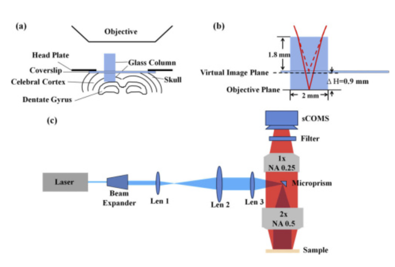

Multi-planar microsocpy

Interactions between the cerebral cortex and the deep cerebellar nuclei play important roles in cognitive processes. However, conventional microscopes fail to dynamically record cellular structures in distinct brain regions and at different depths, which requires high resolution, large field of view (FOV), and depth of field (DOF). Here we propose a single-photon excited fluorescence microscopy technique that performs simultaneous cortex and hippocampus imaging, enabled by a customized microscope and a chronic optical window. After we implant a glass microwindow above the hippocampus, the surface of the hippocampus is shifted to the superficial plane. We demonstrate that the proposed technique is able to image cellular structures and blood vessel dynamics in the cortex and the hippocampus in in vivo experiments, and is compatible with various mesoscopic systems.
References:
1. Zhuang, Chaowei#; Cao, Jiangbei#; Zhang, Rujin#; Xiao, Guihua; Hu, Jin; Xie, Hao*; Dai, Qionghai*; Real-time brain-wide multi-planar microscopy for simultaneous cortex and hippocampus imaging at cellular resolution in mice, Biomedical Optics Express，2021, 12(4): 1858-1868.
2. C. Zhuang#, R. Zhang, G. Xiao, J. Cao, H. Xie*, and Q. Dai*, "Simultaneous superficial cortex and deep brain imaging in mice brain using wide-field microscope through implanting custom-built cranial window," in OSA Imaging and Applied Optics Congress 2021 (3D, COSI, DH, ISA, pcAOP), H. Hua, B. Javidi, M. Martinez-Corral, O. Matoba, A. Stern, S. Thibault, T. Alieva, J. Ke, F. Willomitzer, F. Okten, P. Silveira, P. Banerjee, E. Stoykova, D. Chu, J. Park, F. Imai, C. Joo, M. Digman, D. Gardner, S. Gladysz, D. LeMaster, S. Basu, and O. Korotkova, eds., OSA Technical Digest (Optica Publishing Group, 2021), paper ITu7A.7.
3. https://github.com/Crazyonxh/SDiM-multi-planar-macroscope